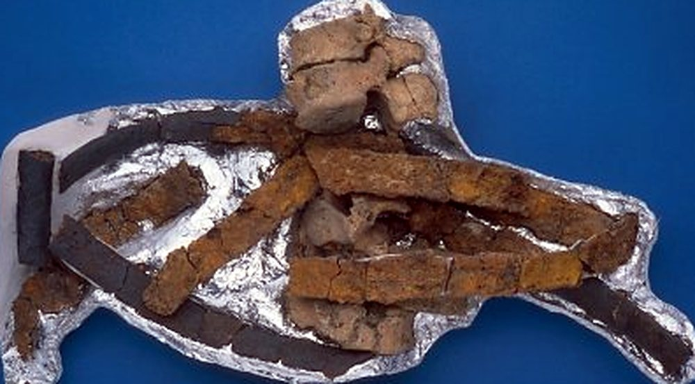

Below the ground
Llandough is an old place: a Roman villa site lies near the church of St Dochdwy, and medieval objects have come out of the ground near the farm. The record of finds, and of the archaeology done before the land was built on, is gathered here.
22 November 1931 — Spearhead, spur and skeletons, found about 1858
- Record:
EV-0018 (Legal Wiki, Evidence Register)
“This spear head was found a[t] Llandough Church Farm when digging foundations for some new buildings about 1858. The spur was also found.”
What the record shows. A letter written at Cogan Pill in 1931 recorded that a spearhead and a spur were found at Llandough Church Farm when foundations for new buildings were dug about 1858, with about six skeletons in the same place.
What it does not show. Written about 73 years after the find. It names Llandough Church Farm, not Great House Farm, and does not tie the objects to the burials.
1994 record (find c. 1858) — Museum Wales 63.24/1: a medieval iron spur
- Record:
EV-0140 (Legal Wiki, Evidence Register)
What the record shows. Amgueddfa Cymru catalogues object 63.24/1, an incomplete iron rowel spur of the 14th–15th century, as an 1858 find at Llandough Church Farm (ST168733), found with six male skeletons.
What it does not show. The museum’s provenance appears to come from the 1931 letter; it does not identify Llandough Church Farm as Great House Farm.
1995 record (find c. 1858) — Museum Wales 63.24/2: a medieval iron spearhead
- Record:
EV-0138 (Legal Wiki, Evidence Register)
What the record shows. Amgueddfa Cymru catalogues object 63.24/2 as a medieval iron spearhead, possibly 15th century, donated in 1963, findspot Llandough Church Farm, c. 1858.
What it does not show. The date is given only as possible; the findspot name is the museum’s.
18 March 1983 — A warehouse fire destroys excavation finds
- Record:
EV-0068 (Legal Wiki, Evidence Register)
“All the materials from the excavations at Cae Castell, Rumney, Cardiff, have been destroyed and so have those from the Roman building at The Knap, Barry, from the Roman Villa site at Llandough and from Barry Village.”
What the record shows. The South Wales Echo reported that a fire at the Glamorgan-Gwent Archaeological Trust’s warehouse destroyed excavation finds, including material from the Roman villa site at Llandough.
What it does not show. The report does not mention Great House Farm; most excavation records were reported salvaged.
August 1990 — “Land at Great House Farm, Llandough: An Archaeological Assessment”
- Record:
EV-0126 (Legal Wiki, Evidence Register)
What the record shows. The Glamorgan-Gwent Archaeological Trust produced an archaeological assessment of land at Great House Farm in August 1990, catalogued as NMR 6524751.
What it does not show. Its full text has not been read against a complete copy.
4 May 1994 — A Roman and early medieval cemetery
- Record:
EV-0134 (Legal Wiki, Evidence Register)
“Following our recent telephone conversation I write to inform you that Cotswold Archaeological Trust is conducting an excavation at the above site of a Roman and early medieval cemetery.”
What the record shows. Cotswold Archaeological Trust wrote to the National Museum of Wales that it was excavating a Roman and early medieval cemetery at the site.
What it does not show. Only the first two pages of the copy have been read.


An object photographed in the family’s album of finds (Part 3, no. 017). Its findspot is not recorded in the album. Source: Wayback Vault, album image.